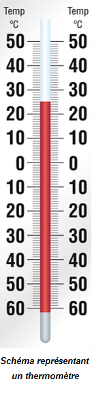
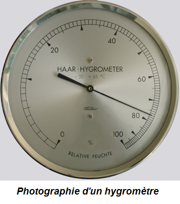
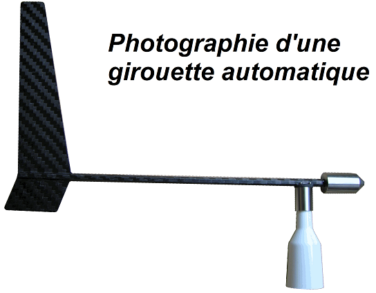
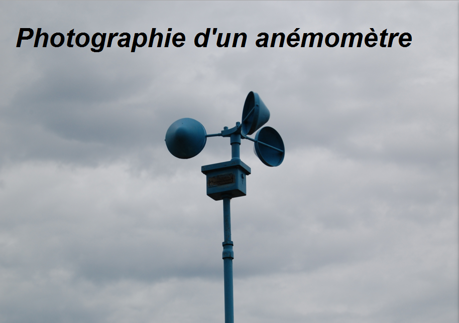

Les principaux instruments de la météorologie
. Le thermomètre
Il en existe divers types qui permettent un relevé de température plus ou moins précis. Les thermomètres à mercure (le mercure se dilate ou se contracte en fonction de la température) font partie des plus précis. Voir cet instrument de mesure en cliquant longuement
. L’hygromètre
Il permet de mesurer le taux d’humidité de l’air. La pollution nuit à l’exactitude de ses résultats. Voir cet instrument de mesure en cliquant longuement
. Le baromètre
Il donne la mesure de la pression atmosphérique. Le baromètre à mercure fonctionne de la façon suivante : l’air exerce une pression sur le mercure ce qui le fait monter et le niveau atteint permet d’évaluer la pression atmosphérique. Une valeur de 1000hPa(soit 1 bar) correspond environ à la pression qu’exerce un objet de 1 kg sur 1 cm2. Plus on est en hauteur, moins il y a de pression atmosphérique. La pression est plus élevée au niveau de la mer qu’en altitude. En moyenne la pression au niveau de la mer est de 1013hPa.
Dans l’air chaud l’agitation des molécules de gaz augmente et elles s’éloignent les unes des autres ce qui diminue la densité de l’air et se traduit par une ascension de l’air chaud. Le baromètre mesure une basse pression. A l’inverse, l’air froid a tendance à descendre ce qui provoque une haute pression du baromètre : on est en haute pression.
Voir cet instrument de mesure en cliquant longuement
. La girouette
Elle donne la direction du vent. Autrefois sur les clochers d’église, les girouettes sont désormais des instruments indispensables aux météorologues, grâce à leur automatisation. Voir cet instrument de mesure en cliquant longuement
. L’anémomètre
On peut trouver divers types d’anémomètres mais nous pouvons les séparer en deux classes en fonction de ceux qu’ils mesurent soit la vitesse du vent (exemple d’anémomètre mesurant la vitesse du vent : l’anémomètre coupelle/ l’anémomètre à ultrasons/ l’anémomètre à fil chaud…) soit sa pression(exemple d’anémomètre mesurant pression du vent: l’anémomètre à tube/l’anémomètre à boule …) mais grâce à une relation entre la vitesse et la pression du vent les deux types d’appareils donnent généralement les deux mesures. Voir cet instrument de mesure en cliquant longuement